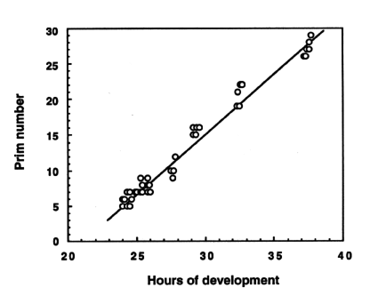

Modified from:
Kimmel et al., 1955.
Developmental Dynamics 203:253-310. Copyright © 1995 Wiley-Liss, Inc.
Reprinted only by permission of Wiley-Liss, a subsidiary of John Wiley &
Sons, Inc.
Fig. 35. Prim number as a function of hours of development (at 28.5C). Prim number is the number of the myotome (equivalent to somite) that the leading, posterior end (see Fig. 34) of the posterior lateral line primordium has reached during its migration from the head to the tip of the tail. The rate of migration is roughly linear. Points represent measurements from individual embryos; data are pooled from different experiments.

Figure 35